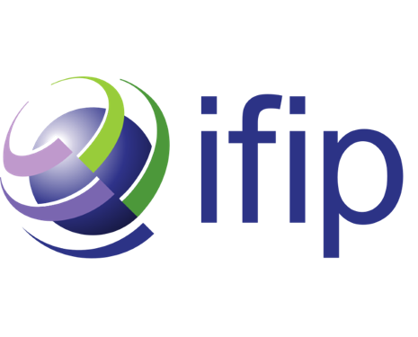

IFIP
SUMMER
SCHOOL
Privacy & Identity Management
📅
10–14
August 2026
📍
De Valk 3,
Leuven BE
AGENDA
Monday
10 Aug
Tuesday
11 Aug
Wednesday
12 Aug
Thursday
13 Aug
Friday
14 Aug
09:00
09:15
Registration
Registration
Registration
Registration
09:15
10:15
Keynote 2: Joana Mazur
DV3 01.07
Keynote 4: Felix Bieker
DV3 01.07
Keynote 6: Ruba Abu-Salma
DV3 01.07
Keynote 8: Christian Bormann
DV3 01.07
10:15
10:30
Coffee break
Coffee break
Coffee break
Coffee break
10:30
12:30
No session
No session
Paper session
Generative AI, Data Protection, and Sectoral Applications (1/2)
Chair: Stefan
Room:
DV3 01.07
The Right Tool for the Job: On the Selection of Mitigations for GenAI Privacy Threats
Data Sharing with Generative AI: Privacy Calculus, Trust, and Cybersecurity Behaviour in Germany from a Multilateral Security Perspective
To Art or Not to Art: How AI Can Pivot from Shakespearean Villain to a Restorative and Structural Hero in the Creative Industries
Paper session
Digital Identity, Wallets, and Decentralized Systems (1/2)
Chair: Simone Fischer-Hübner
Room:
DV3 01.10
Com(m)itology in the Making: Regulating Through Technical Architecture in the European Digital Identity Wallet
Trusted Data Exchanges Across Regulatory Boundaries: A Research Agenda for Personal Data Vault Interoperability
Biometric Surveillance and Identity Management in Ride-Hailing Platforms: Privacy Risks and Legal Governance Implications
Paper session
Privacy Literacy, Digital Divide, and Technical Vulnerabilities (2/2)
Chair: Michael Friedewald
Room:
DV3 01.07
Serious Games for Privacy Literacy: An Overview
Privacy Risk Identification in Organ-on-Chip: From Re-identification to Pseudo-Reidentification
One Outage Away: A Multi-Dimensional Measurement Study of Internet Infrastructure for Minority-Serving Web Services
Paper session
AI Governance, Regulation, and Institutional Frameworks (1/2)
Chair: Silvia De Conca
Room:
DV3 01.10
Governing AI Across Borders: Corporate Power, State Sovereignty, and Global Regulation
Knowledge Asymmetries in the EU AI Act's Two-Tier Disclosure Architecture
The United Nations and Global Data Privacy Governance: Navigating Norms, Stakeholders, and the Global South
Paper session
Data Protection Principles (1/2)
Chair: Anna
Room:
DV3 01.07
The principles of data minimisation and purpose limitation in Common European Data Spaces: sharing is caring?
Datafication and Vulnerability: Patients and Farmers in the Common European Data Spaces
Can Data Accuracy Survive Someone's Death? A post-mortal privacy study
Paper session
Privacy-Enhancing Technologies, Cryptographic Systems, and Infrastructure Security (2/2)
Chair: Stephan
Room:
DV3 01.10
Proof of Personhood: A Systematic Survey, Threat Model, and Evaluation Framework for Sybil-Resistant Identity in Decentralized Systems
Preserving Privacy with Technology: A data protection analysis of the Nym mixnet
Towards a privacy-preserving PKI for Satellite Communications
Paper session
AI Governance, Regulation, and Institutional Frameworks (2/2)
Chair: Stefan
Room:
DV3 01.07
From Principles to Controls: A Design-Science Justification of an AI Auditing Meta-Framework
Ex-ante Regulatory Framework for Access to Foundation AI Models
What's really important? Priorities of trustworthy AI requirements in healthcare: the perspective of clinicians in Sweden
Paper session
Data Protection Principles (2/2)
Chair: Laura Drechsler
Room:
DV3 01.10
The principles of data minimisation and purpose limitation in Common European Data Spaces: sharing is caring?
Datafication and Vulnerability: Patients and Farmers in the Common European Data Spaces
Can Data Accuracy Survive Someone's Death? A post-mortal privacy study
12:30
14:00
13:45 – 14:00
Opening session
Lunch
Lunch
Lunch
Closing remarks & Best Paper Award
Lunch from 13:00
14:00
15:00
Keynote 1: Bart Preneel
DV3 01.07
Keynote 3: Yixin Zou
DV3 01.07
Keynote 5: Elena Pagnin
DV3 01.07
Keynote 7: Pierre Dewitte
DV3 01.07
15:00
15:30
Coffee break
Coffee break
Coffee break
Coffee break
15:30
17:00
Paper session
Privacy-Enhancing Technologies, Cryptographic Systems, and Infrastructure Security (1/2)
Chair: Ina Schiering
Room:
DV3 01.07
Reconstructing Liability in Distributed Architectures: The Revised Product Liability Directive vs. Federated Machine Learning
Overview of Post-Quantum Attribute-Based Credential Schemes
A Scalable Platform for Dynamic Privacy Analysis of iOS Applications on Physical Devices
Paper session
Privacy Literacy, Digital Divide, and Technical Vulnerabilities (1/2)
Chair: Aga
Room:
DV3 01.10
The "surveillance vs. privacy" paradigm: a theoretical critique
Schrödinger's Crisis: Evaluating the possibility of a standards-driven power creep in IoT cybersecurity
Hunting for Bits in the Shadow of Regulation: Entropy-Based Characterization of Compiler-Induced Side-Channel Leaks
Workshop session
WORKSHOP: A Loving Home for PETs? Surveillance States and Big Tech Co-Opting Privacy-Enhancing Technologies
Room:
DV3 01.07
Workshop session
WORKSHOP: Zero-Knowledge Technology as a Foundation for Digital Sovereignty
Room:
DV3 01.10
Paper session
Digital Identity, Wallets, and Decentralized Systems (2/2)
Chair: Felix Bieker
Room:
DV3 01.07
Towards automated compliance verification
Agile eIDAS Lawmaking: Protecting Privacy while Spurring Innovation?
Blockchain Meets Biometrics: The Case of World(coin) from EU Data Protection and Data Colonialism Perspectives
Paper session
Generative AI, Data Protection, and Sectoral Applications (2/2)
Chair: Anna
Room:
DV3 01.10
Product Liability and Privacy Protection in the Digital Age: Bridging the Gap Between the PLD and GDPR by Addressing Harm Caused by Software and AI
Ethical Considerations in AI Powered Language Technologies: Insights from East and West Armenian
Are Guardrails in Current Agentic AI Systems Implementing Privacy by Design?
Workshop session
WORKSHOP: Bridging the Gap - Toward a Global Graduate Curriculum for Digital Privacy
Room:
DV3 01.07
Workshop session
WORKSHOP: Solid Pods for AI Agents: Building GDPR-Compliant Data Backends
Room:
DV3 01.10
No session
No session
17:00
18:00
Welcoming Reception
Workshop Science Communication
(starting at 17:15?)
Social activity
Urban hunt
After
18:00
Social Dinner